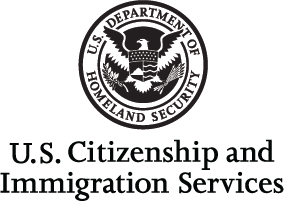
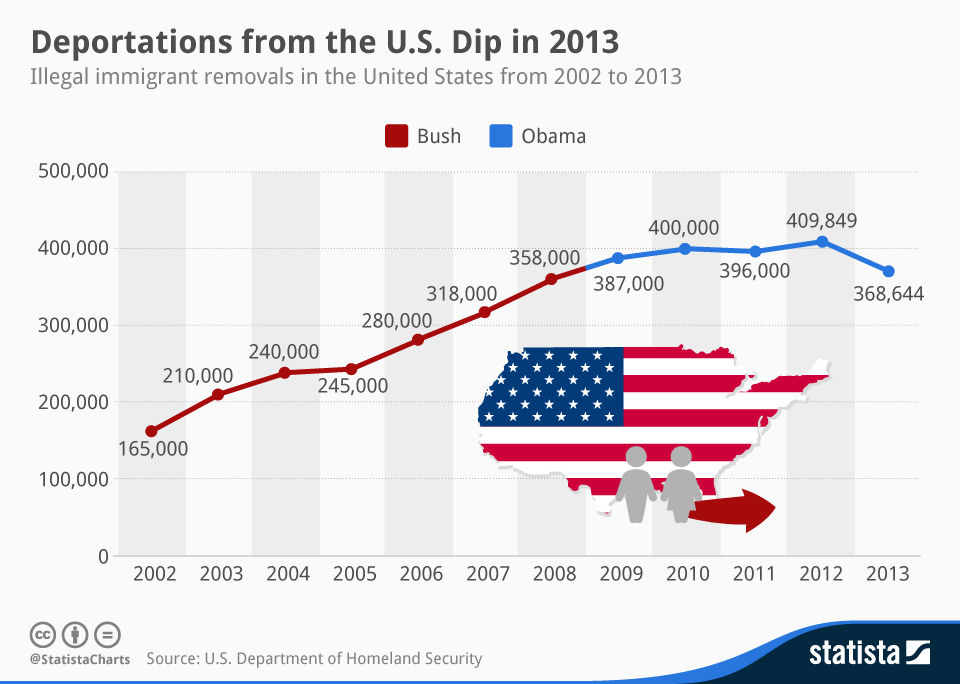

Immigration in United States

Electroic Reading Room
Data and stadistics
Reports and studies
Congress correspodence
Explore my options
Report a fraud
Learn about E-verify
Learn about how yo work in the US
Learn about green cards
Apply for the green cards
Renew the green cards
Remove conditions
Learn about citizenship
Apply for citizenship
Study for the exam
Take a practice
NEWS
The Department of Homeland Security (DHS) today published a notice in the Federal Register that extends the validity of documentation related to Temporary Protected Status (TPS) for beneficiaries under designations to TPS of El Salvador, Haiti, Honduras, Nepal, Nicaragua and Sudan, until January 4, 2021.
The United States Citizenship and Immigration Service announced today that petitioners can now complete and submit online Form I-130, Petition of Foreign Family Member.
The Citizenship and Immigration Services (USCIS, for its acronym in English) announced today that that from December 2 adjusts the rate request for priority processing of certain requests and applications based on employment.
EVENTS
November 5: USCIS Library Information Center, ME
November 5: USCIS Information Desk, Doral, FL
November 5: USCIS Library Information Center, Boston, MA
November 7: USCIS Library Information Center, Lewiston, ME
The Ellis Island Legacy" tells the story of Ellis Island from the perspective of those who worked there and highlights the historical connections.

If you want know more wacth the video USCIS AND THE LEGACYOF ELLIS ISLAND on youtube.
trailer video